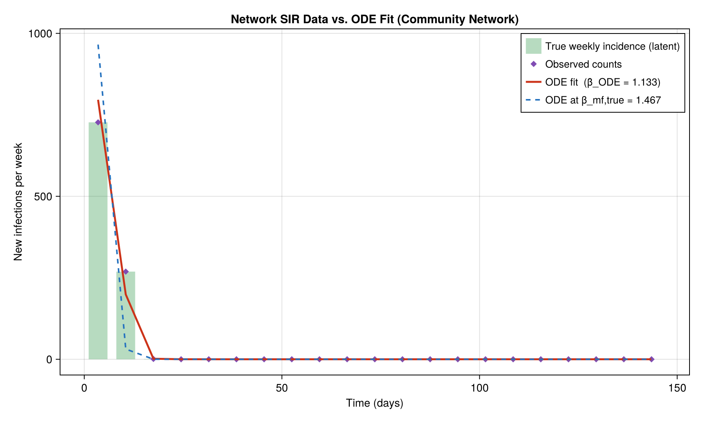
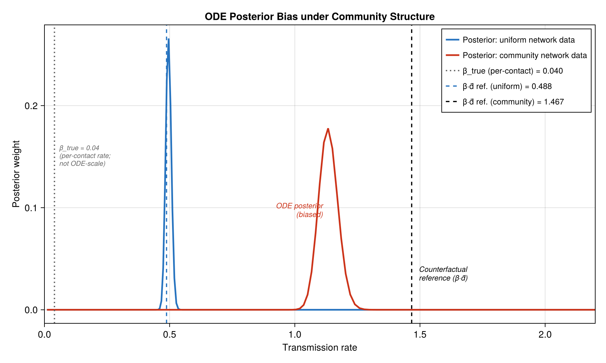
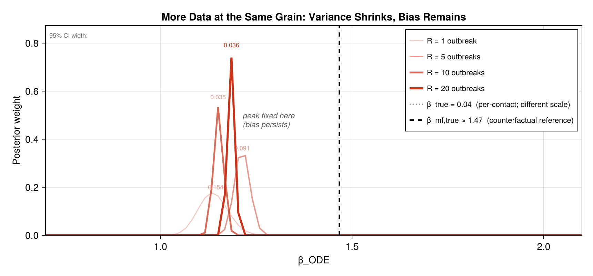
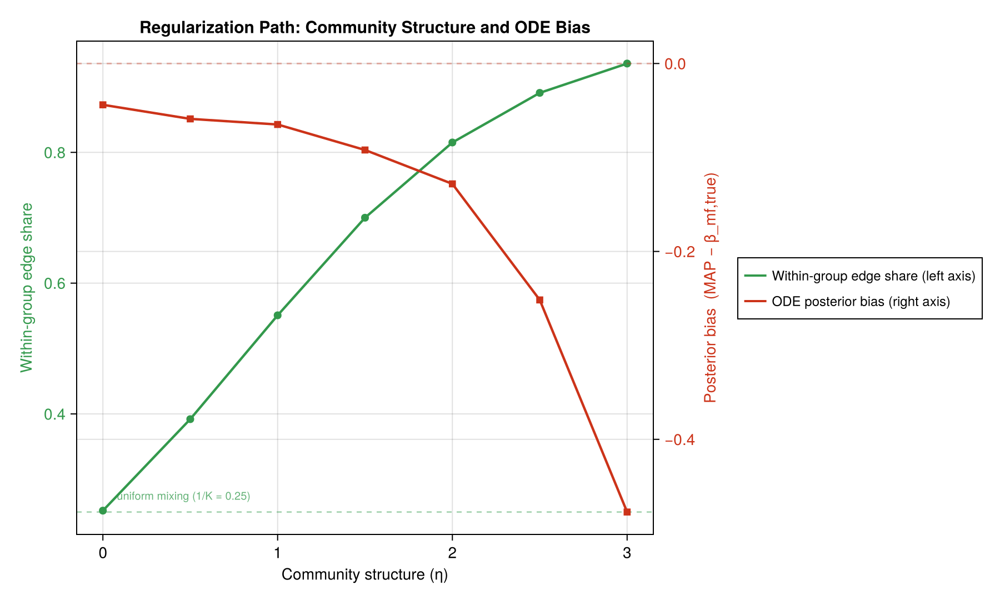

When More Data Make
the Wrong Model More Certain
Network Dependence, Regularization, and Mean-Field Bias
in Agent-Based SIR Models
CSSSA 2025 · [Author]
The SIR Model — Mean-Field ODE
Three compartments: Susceptible,
Infected, Recovered.
\[
\frac{dS}{dt} = -\beta_{\text{ODE}}\frac{SI}{N},
\qquad
\frac{dI}{dt} = \beta_{\text{ODE}}\frac{SI}{N} - \gamma I,
\qquad
\frac{dR}{dt} = \gamma I
\]
- \(\beta_{\text{ODE}}\) — transmission rate (mass-action)
- \(\gamma\) — recovery rate; mean infectious period \(= 1/\gamma\)
- \(N = S + I + R\) — total population (constant)
This is the standard calibration target. Simple, tractable, widely used.
But it contains a hidden assumption about social structure.
The Hidden Social Assumption
Focus on the infection term:
\[
\underbrace{\beta_{\text{ODE}} \frac{S \cdot I}{N}}_{\text{infection rate}}
\]
The product \(S \cdot I\) encodes uniform mixing:
- Every susceptible is equally likely to contact any infected agent
- Social structure, geography, group membership — all ignored
- Contact opportunities scale with the product of aggregate counts
The product \(S \cdot I\) is a social assumption, not algebra.
It is wrong wherever people mostly interact within social groups.
The Network SIR Model
Replace \(SI/N\) with an explicit contact network \(A\).
Agent \(i\) can only be infected by its neighbors \(\mathcal{N}(i)\).
\[
P\!\bigl(i\ \text{infected in}\ [t,\,t{+}\Delta t]\bigr)
\;=\; 1 - \exp\!\Bigl(-\beta\,\Delta t
\sum_{j\,\in\,\mathcal{N}(i)}\mathbf{1}\{X_j(t)=I\}\Bigr)
\]
- \(\beta\) — per-contact, per-infected-neighbor rate (different scale from \(\beta_{\text{ODE}}\))
- Aggregate incidence \(\propto E_{SI}(t)\): the number of susceptible–infected edges, not the product \(S \cdot I\)
Derived from competing hazards of independent Poisson contact processes
(Kiss, Miller & Simon 2017, Ch. 3).
Same Density, Different Structure — Different ODE Estimate
Under uniform mixing with mean degree \(\bar{d}\):
\(\;\beta_{\text{mf,true}} = \beta_{\text{true}} \times \bar{d} \approx 0.04 \times 37 \approx 1.47\)
Community Structure Creates Two-Phase Dynamics

Community-network data (bars): rapid within-group spread, then a slower second wave
as the epidemic crosses group boundaries. The ODE fit (red) compromises between the two phases.
The ODE at \(\beta_{\text{mf,true}}\) (dashed) peaks too early.
No single \(\beta_{\text{ODE}}\) can reproduce the two-phase shape.
The fitted ODE lands on a pseudo-true \(\beta_{\text{ODE}}^*\)
that minimizes aggregate misfit — not the true transmission rate.
Putting It Together: A Generative Statistical Model
Mechanism
(theory)
SBM, η
community strength
→
Network
ABM
β = 0.04
per contact
→
Latent
epidemic
E_SI(t)
SI edges
→
Observation
process
Δt = 7 days
weekly totals
→
Coarse
data
Y₁,…,Y₂₁
no group info
→
ODE
calibration
β_ODE
mass-action
→
Posterior
+ criticism
β* ≈ 1.13
bias = −23%
← coarsening hides network structure →
Once community structure is aggregated away, no amount of additional
coarse data can recover it.
Result 1: The ODE Posterior Is Biased

Blue: ODE posterior fitted to uniform-network data —
correctly near \(\beta_{\text{mf,true}}\) (dashed).
Red: ODE posterior fitted to community-network data —
concentrated 23% below the reference.
Both posteriors are tight. The bias is misspecification, not uncertainty.
Result 2: More Data at the Same Grain

Posteriors for \(R = 1, 5, 10, 20\) independent community-network outbreaks
(faint → dark red). 95% CI width annotated above each peak.
The peak does not move toward \(\beta_{\text{mf,true}}\) (dashed).
Variance shrinks fourfold. Bias is unchanged.
More data make the wrong model more certain.
Result 3: Bias Grows with Community Structure

Varying \(\eta\) from 0 (Erdős–Rényi) to 3 (strong community structure).
Within-group edge share (green, left axis) and ODE bias (red, right axis)
both increase monotonically. At \(\eta=0\), bias \(\approx 0\); at \(\eta=3\), bias \(= -0.48\).
The uniform-mixing ODE is the maximally regularized limit
(\(\eta \to 0\)) — not a neutral baseline, but the case where all
group distinctions have been shrunk to zero.
Conclusion
- The \(SI/N\) product term encodes uniform mixing —
a strong social assumption that fails under community structure
- Fitting the ODE to community-network data produces a
biased posterior that absorbs group structure
into a lower effective rate
- Collecting more data at the same coarse grain
sharpens the bias — variance shrinks, bias remains
- ODE bias increases monotonically with \(\eta\):
the stronger the community structure, the worse the misspecification
Make social simulation empirically disciplined: determine
which mechanisms are needed, which can be regularized away,
and where a model's claims cease to be robust.
Kermack & McKendrick (1927) ·
Holland et al. (1983) ·
Newman (2002) ·
Kiss et al. (2017) ·
McAllester (1999)